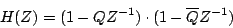
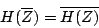
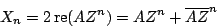
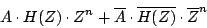
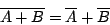
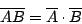
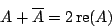
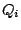
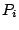

Next: Two recirculating filters for
Up: Elementary filters
Previous: Compound filters
Contents
Index
In most applications, we start with a real-valued signal to filter and we need
a real-valued output, but in general, a compound filter with a transfer
function as above will give a complex-valued output. However, we can
construct filters with non-real-valued coefficients which nonetheless give
real-valued outputs, so that the analysis that we carry out using complex
numbers can be used to predict, explain, and control real-valued output
signals. We do this by pairing each elementary filter (with coefficient
 or
or  ) with another having as its coefficient the complex conjugate
) with another having as its coefficient the complex conjugate
 or
or  .
.
For example, putting two non-recirculating filters, with coefficients and
, in series gives a transfer function equal to:

which has the property that:

Now if we put any real-valued sinusoid:

we get out:

which, by inspection, is another real sinusoid.
Here we're using two properties of complex conjugates. First, you can
add and multiply them at will:


and second, anything plus its complex conjugate is real, and is in fact
twice its real part:

This result for two conjugate filters extends to any compound filter; in
general, we always get a real-valued output from a real-valued input if we
arrange that each coefficient  and  in the compound filter is
either real-valued, or else appears in a pair with its complex conjugate.
Next: Two recirculating filters for
Up: Elementary filters
Previous: Compound filters
Contents
Index
Miller Puckette
2006-12-30